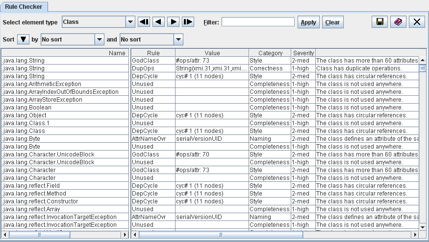

Contents > 4 The SDMetrics User Interface > 4.7 The View 'Rule Checker'
4.7 The View 'Rule Checker'
Design rules and heuristics detect potential problems in your UML
design, for example:
- incomplete design such as unnamed classes, states without
transitions,
- incorrect design such as an interface having an association with
navigability away from the interface,
- style issues such as circular dependencies among packages, a class
referencing one of its subclasses,
- violation of naming conventions for classes, attributes,
operations, packages,
- etc.
Appendix C: "List of Design Rules" contains the list of design rules that SDMetrics
implements. Of course, you can customize this list to your needs,
and define new design rules of your own. This is described in
Section 8.3 "Definition of Design Rules".
The 'Rule Checker' view displays design rule violations in a table. Each row
of the table represents a violation of a design rule by a design element.

Figure 12: Design Rule Checker
The meaning of the columns is as follows:
- Name: Name of the design element that violates the rule.
- Rule: Name of the violated rule.
- Value: Some rules return a value that provides additional
information about how the design element violates the rule.
- Category: The category of the rule describes the criteria
the rule checks, for example naming, completeness, correctness, or style.
- Severity: The severity of the violated indicates how
critical the violation of the rule is, and therefore how urgently
it should be resolved.
- Description: A short description of the violated rule.
The context menu of right hand side table contains links to the
measurement catalog showing the detailed definition of the violated
rule in the selected row (see Section 4.13 "The View 'Catalog'"), and the Kiviat diagram
for the model element in the selected row (when available).
Sort the table of design rule violations by columns, e.g., to
quickly find all rule violations for a particular design element, all
violations of a particular rule, or to sort the rule violations by
their severity or category. Section 4.3.1 "Common controls in views" describes how to sort
tables.
4.7.1 Filtering Design Rules
4.7.2 Accepting Design Rule Violations
| Prev |
Up |
Next |
| Section 4.6 "The View 'Kiviat Diagrams'" | Contents | Section 4.7.1 "Filtering Design Rules" |